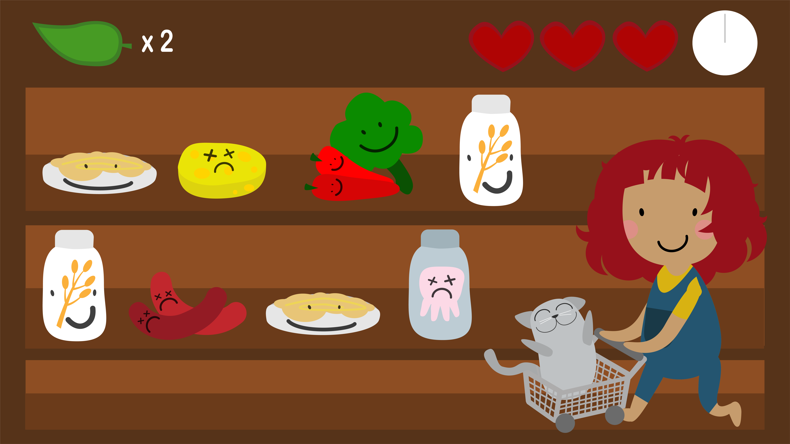

02.01.04 Assetliste og designdokumentation til spil
I animatinstemaet har vi arbejdet med at designe vores eget spil. Jeg har lavet spillet Vegansk indkøb, som er et hyggeligt og børnevenligt spil, hvor man skal hjælpe figuren Amira og hendes kat med at vælge de plantebaserede madvare på indkøbsturen.
Spillets stil og formgivningen af figure og spilelementer er inspireret at karakterene fra tegnefilmen Adventure Time.


Spil skærm.